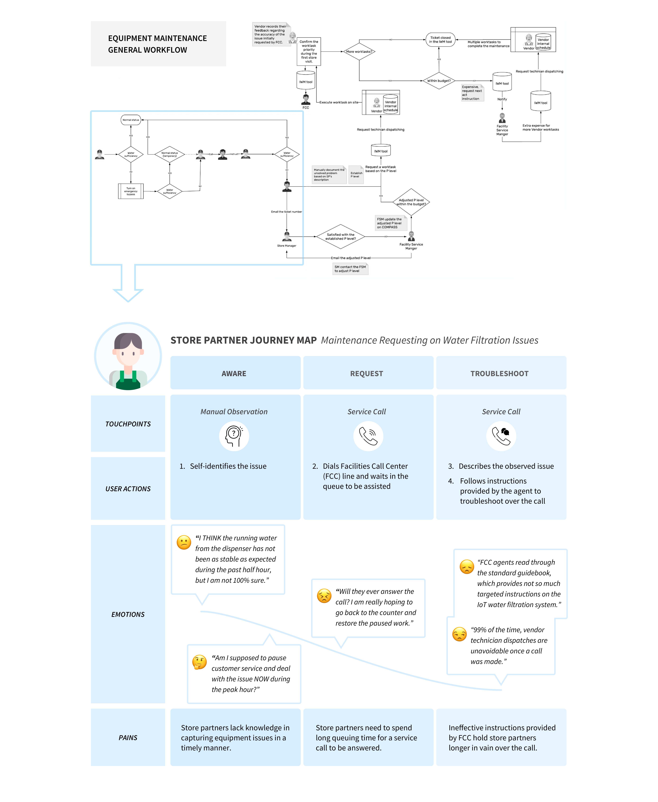
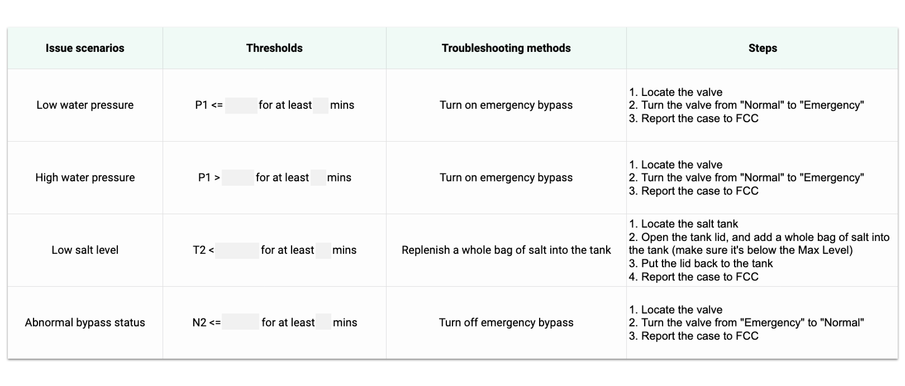
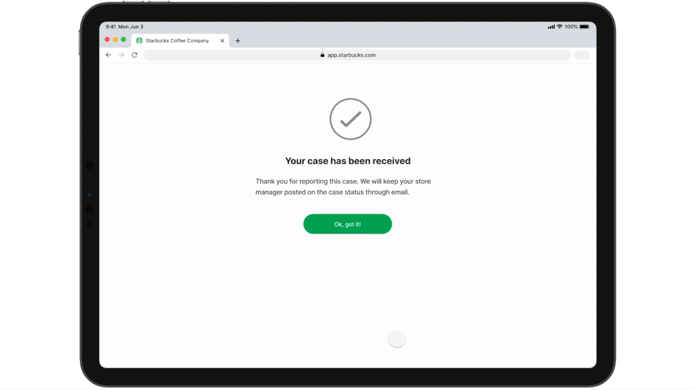

Enabling Preventive Maintenance through IoT Intelligence
User-Centered Design Process · Proof-of-Concept · Web Application
My Role
- Drove UX and UI as the lead designer
- Worked with the product owners (from Starbucks Corporate Facilities, Global Equipment and Tryer Center Innovation Lab) to clarify business and product goals
- Conducted generative user research in initial problem defining phase
- Facilitated evaluative usability studies between design iterations
- Crafted wireframes and mockups in various fidelities and interactions
Overview
Starbucks is shifting into a preventive maintenance approach by implementing an inter-connected water filtration system. Leveraging IoT analytics, the overarching goal is to predict component failures and achieve “fix-before-fail” to optimize equipment uptime and reduce operating expenses.
The Challenge
The company foresaw IoT bringing positive impacts on 4 key stakeholders’ responsibilities at the core of tackling equipment maintenance.
I led design for Store Operation team, tackling the challenge of minimizing store partners' mindshare and opportunity cost on equipment maintenance for better customer engagement.
The Solution
Adopted a user-centered design approach, I delivered a digital solution that reduces store partners’ mindshare and opportunity costs during the maintenance requesting process.
View Design in Action
Identify Experience Frictions
The whole process started with putting myself into store partners’ shoes. I conducted 8 interviews to understand their engagement and experience in the existing reactive maintenance procedure.

High Mindshare & Opportunity Costs
In the existing process, store partners are the personnel who’s responsible for initiating maintenance request on equipment failures. By mapping out their journey, I understood the maintenance requesting process required store partners to manually identify failures and request troubleshooting through a service call, in which high mindshare was demanded with increased opportunity costs for customers service and engagement.
Define Design Scope
We worked closely with Equipment R&D and Tryer Center Innovation teams to understand IoT capabilities for defining a feasible project scope.
With a deep dive into telemetry streamed from an array of flow, pressure, and conductivity sensors possessed across the configuration, we comprehended that IoT analytics offered the technical feasibility of heading off equipment failures before they happen, sending realtime alerts, and guiding store partners through the maintenance requesting procedure.

A sneak peek into our "war room"
Experience Empowered by IoT
For example, in a scenario when water pressure gets below the threshold, IoT will notify partners on the shift that their store is at risk of water starvation. Store partners will then find tailored instructions to tackle the issue by turning on emergency bypass before contacting Facilities Call Center for further investigation.
In such an experience, store partners are able to spend more time hand-crafting the perfect beverages and less mindshare on dealing with equipment maintenance requesting.
Ideation
Use Cases
With team alignment on the workflow, I conducted a holistic audit on common issues that store partners encounter on filtration system, and compiled a list of maintenance use cases.

Early Explorations
I started exploring ideas for UI on tablet web app, considering portability and readability as important factors for store partners to perform onsite troubleshooting.
Got a “yes” for the interaction model, I went on the wireframe stage to explore how this design will look like in the digital world.
"Alert Details" - Placement Variations
My initial iteration on placement of alert issue details includes several versions of fitting the message in the same screen with progress instruction steps.
After testing these variations, I realized repeating that same piece of content throughout the entire instruction doesn’t have additional value to help partners accomplish each step. It also makes the screen visually overwhelming and text-heavy.
I decided to have an individual screen to display alert issue details. With more space on the screen, there’s also a better chance to elaborate the message to help partners understand the situation.
"Instruction Steps" - Layout Variations
Displaying the progressive instruction steps is essential in guiding store partners through their self-troubleshooting procedure. I explored several layouts to communicate their current stage and steps left in the process. Each step is marked with a number and very concise description of what partners should do in that step.
We raised an interesting question during a post usability study brief on revealing step descriptions. Unlike multi-step forms and questionnaires in which users might want to go back to previous steps and revise original inputs, chances are low for store partners to revisit certain steps they’ve completed onsite given their limited bandwidth during work.
The refined design offers a minimal layout to effectively explain the scope of the process, and enable partners to concentrate on one step at a time while accessing previous step(s) with a low-key pattern.
"Alert Reminder" - Edge Case Flow
“Alert reminder” is another key feature to minimize store partners’ mindshare on picking up on unfinished troubleshooting. Triggered by a push notification, partners are given the options to continue with where they left off or start over; getting back to the game at ease.
Final Design
While crafting high fidelity mockup, I made sure to align with the established Starbucks Pattern Library to strike the balance between branding and platform principles.
Receiving Issue Alert
Proceeding Troubleshooting Steps
Confirming Case

Resuming Troubleshooting Process